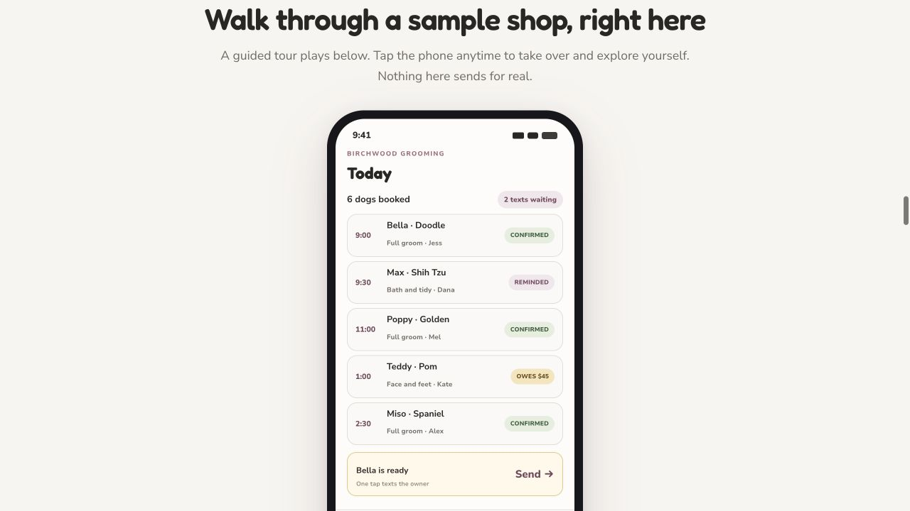

Live web product · iPhone external beta
Fuwari
Paid, live customer software, in daily use.
I built and operate grooming software around the way a working business schedules, communicates and gets paid.
- The problem
- Scheduling, client communication and financial follow-through were scattered across tools and informal records.
- My part
- Observed the workflow, shaped the product, built and re-platformed the customer web app, extended the native iPhone surface, and own testing, release and maintenance.
- What I built
- A Next.js and Supabase web app: scheduling, messaging, financial workflows and AI assistance. AI tools help with implementation and review. I verify.
- Where it stands
- Live customer web software. The iPhone app is in an external beta group and is not on the public App Store.
